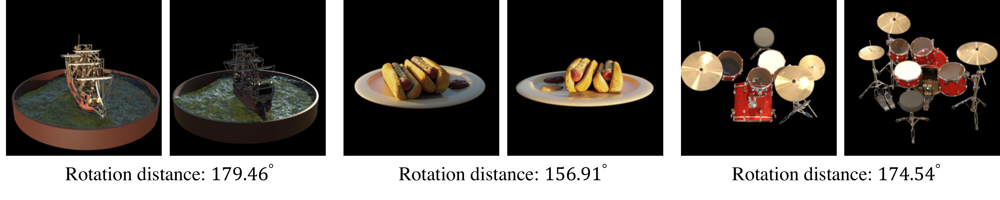

**LU-NeRF: Scene and Pose Estimation by Synchronizing Local Unposed NeRFs**
[Zezhou Cheng^1](http://people.cs.umass.edu/~zezhoucheng), [Carlos Esteves^2](https://machc.github.io/), [Varun Jampani^2](https://varunjampani.github.io/), [Abhishek Kar^2](https://abhishekkar.info/), [Subhransu Maji^1](http://people.cs.umass.edu/~smaji/), [Ameesh Makadia^2](https://www.ameeshmakadia.com/)
^1 University of Massachusetts Amherst ^2 Google Research
__TL;DR__ LU-NeRF jointly estimates SE(3) camera poses and NeRFs without (1) coarse camera pose initialization (unlike [BARF](https://chenhsuanlin.bitbucket.io/bundle-adjusting-NeRF/)) (2) prior pose distribution (unlike [GNeRF](https://arxiv.org/abs/2103.15606)) (3) depth information (unlike [NoPe-NeRF](https://nope-nerf.active.vision/) and [LocalRF](https://localrf.github.io/))
Problem: NeRF relies on accurate camera poses
--------------------------------
The camera poses used in NeRF are usually estimated by Structure-from-Motion (SfM). However, SfM may fail in many scenario such as textureless region, repetative patterns, and low-resolution images. Below lists some examples from Objectron dataset where [COLMAP](https://colmap.github.io/) fails even with modern feature descriptor and matcher (e.g. [Superpoint](https://arxiv.org/abs/1712.07629) and [Superglue](https://arxiv.org/abs/1911.11763)).
Our approach could potentially serve as a complementary technique to COLMAP in such situations.
Existing solutions: jointly optimize camera poses and NeRF
--------------------------------
Existing works rely on coarse camera estimation (e.g. [BARF](https://chenhsuanlin.bitbucket.io/bundle-adjusting-NeRF/)), prior pose distribution (e.g. [GNeRF](https://arxiv.org/abs/2103.15606)), geometric priors such as depth (e.g. [NoPe-NeRF](https://nope-nerf.active.vision/) and [LocalRF](https://localrf.github.io/)). For example, GNeRF degrades as the pose prior is expanded beyond the true distribution, as shown below,
Our method: local-to-global pose and scene optimization
--------------------------------
* Our method consists of three steps: Build a connected graph --> Local pose estimation --> Global pose and scene refinement.
* An interesting observation when training a local unposed NeRF is the __mirror symmetry ambiguity__. For example, the depth of mini-scene-2 below is __inversed__, which results in high pose estimation error. We propose a simple method to resolve such ambiguity (see paper for details).
mini-scene-1 (rotation error: 4.50 degrees)
novel view RGB
novel view depth
mini-scene-2 (rotation error: 167.09 degrees)
novel view RGB
novel view depth
Caveats & Future work
--------------------------------
1. __High computational cost for MLP-based NeRFs__. This can be potentially solved with grid-based NeRF (e.g. [TensoRF](https://apchenstu.github.io/TensoRF/)).
2. __Unstable graph building on unorderd images__. One way to build a connected graph is using pretrained [DINO](https://arxiv.org/abs/2104.14294) feature. However, some image pairs are not distinguishable with DINO (see below), which leads to noise in the graph and may cause the failure of our model.

Concurrent works
--------------------------------
1. Bian, Wenjing, Zirui Wang, Kejie Li, Jia-Wang Bian, and Victor Adrian Prisacariu. [NoPe-NeRF: Optimising Neural Radiance Field with No Pose Prior.](https://nope-nerf.active.vision/) CVPR 2023.
2. Andreas Meuleman, Yu-Lun Liu, Chen Gao, Jia-Bin Huang, Changil Kim, Min H Kim, and Johannes Kopf. [Progressively optimized local radiance fields for robust view synthesis.](https://localrf.github.io/) CVPR 2023.
3. Mehdi S. M. Sajjadi, Aravindh Mahendran, Thomas Kipf, Etienne Pot, Daniel Duckworth, Mario Lučić, Klaus Greff. [RUST: Latent Neural Scene Representations from Unposed Imagery.](https://rust-paper.github.io/) CVPR 2023.
4. Axel Levy, Mark Matthews, Matan Sela, Gordon Wetzstein, Dmitry Lagun. [MELON: NeRF with Unposed Images Using Equivalence Class Estimation.](https://melon-nerf.github.io/) arXiv 2023.
5. Cameron Smith, Yilun Du, Ayush Tewari, Vincent Sitzmann. [FlowCam: Training Generalizable 3D Radiance Fields without Camera Poses via Pixel-Aligned Scene Flow](https://cameronosmith.github.io/flowcam/) arXiv 2023.
BibTeX
-------------------------------
~~~~~~~~~~~~~~~~~~~~~~~~ none
@InProceedings{cheng2023lunerf,
title={LU-NeRF: Scene and Pose Estimation by Synchronizing Local Unposed NeRFs},
author={Cheng, Zezhou and Esteves, Carlos and Jampani, Varun and Kar, Abhishek and Maji, Subhransu and Makadia, Ameesh},
booktitle = {Proceedings of the IEEE International Conference on Computer Vision (ICCV)},
year={2023}
}
~~~~~~~~~~~~~~~~~~~~~~~~
Acknowledgements
-------------------------------
We thank Zhengqi Li and Mehdi S. M. Sajjadi for fruitful discussions. The research is supported in part by NSF grants #1749833 and #1908669. Our experiments were partially performed on the University of Massachusetts GPU cluster funded by the Mass. Technology Collaborative.